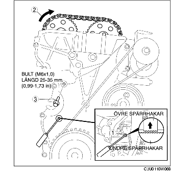

JUSTERING AV VENTILSPEL [LF]
B3E011012111W04
1. Ta bort tändstiftskyddet. (Se DEMONTERING/MONTERING AV TÄNDSTIFTSKYDD [LF].)
2. Demontera batterikåpan. (Se DEMONTERING/MONTERING AV BATTERIET [LF].)
3. Lossa batteriets minuskabel.
4. Koppla ur kablaget.
5. Demontera följande delar.
-
(1) Framhjul och däck (höger) (Se ALLMÄN ARBETSGÅNG (HJULUPPHÄNGNING).)
-
(2) Motorns undre kåpa och innerskärm (höger)
-
(3) Tändspolar (Se DEMONTERING/MONTERING AV TÄNDSPOLE [LF].)
-
(4) Ventilationsslang
-
(5) Ventilkåpa
-
(6) Nedre blindplugg i främre motorkåpa

-
(7) Övre blindplugg i främre motorkåpa

-
(8) Nedre blindplugg i motorblock
6. Montera specialverktyget som bilden visar.
7. Dra vevaxeln medsols tills vevaxeln är i övre dödläge för cylinder 1 (till dess balansvikten fästs på specialverktyget).
8. Lossa kamkedjan.
-
(1) Använd en lämplig skruvmejsel eller likvärdigt verktyg och lås upp kedjespännaren.

-
(2) Vrid avgaskamaxeln medsols med en lämplig nyckel på den gjutna sexkanten, och lossa kamkedjan.
-
(3) Sätt in en lämplig bult (M6 X 1,0 längd 25 mm-35 mm {0,99-1,37 tum}) i främre motorkåpans övre blindplugg, och säkra kedjeuppstyrningen i den position där spännkraften lossas.
9. Håll fast avgaskamaxeln med en lämplig nyckel på den sexkantiga delen som figuren visar.
10. Ta bort kamaxelns kedjehjul.
11. Lossa kamaxelns lageröverfallsbultar i 2-3 steg, i den ordning som visas.
-
Observera
-
• Topplocket och kamaxelöverfallen är numrerade så att de kan återmonteras korrekt på originalplatsen. Förvara kamaxelöverfallen tillsammans med det topplock de hör till medan de är demonterade. Blanda inte överfallen.
12. Ta loss kamaxeln.
13. Ta loss ventillyftaren.
14. Välj lämplig tjocklek på shimset.
-
Ny tjocklek på shimset
-
= Shim som togs bort + Uppmätt ventilspel - Angivet ventilspel (IN: 0,25 mm {0,0098 tum}, AVGAS: 0,30 mm {0,0118 in})
-
Standard [Kall motor]
-
IN: 0,22-0,28 mm {0,0087-0,0110 in}
-
AVGAS: 0,27-0,33 mm {0,0107-0,0129 in}
15. Montera kamaxeln så att cylinder 1 står i övre dödläge.
16. Dra åt kamaxelns lageröverfallsbultar i följande 2 steg.
-
Åtdragningsmoment
-
(1) 5,0-9,0 Nm
-
{51,0-91,7 kpcm, 44,3-79,6 in·lbf}
-
(2) 14,0-17,0 Nm
-
{1,5-1,7 kpm, 10,4-12,5 ft·lbf}
17. Montera kamaxelns kedjehjul.
-
Observera
-
• Dra inte åt bulten för kamaxelns kedjehjul i det här steget. Kontrollera först ventilinställningen, och dra sedan åt bulten.
18. Montera specialverktyget på kamaxeln enligt bilden.
19. Demontera bulten (M6 X 1,0, längd 25 mm-35 mm {0,99-1,37in}) från främre motorkåpan för att lägga spännkraft på kamkedjan.
20. Vrid vevaxeln medsols tills vevaxeln är i övre dödläge för cylinder 1 (tills balansvikten kan monteras på specialverktyget).
21. Håll fast avgaskamaxeln med en lämplig nyckel på den sexkantiga delen som figuren visar.
22. Dra åt låsbulten för avgaskamaxelns kedjehjul.
-
Åtdragningsmoment
-
69-75 Nm
-
{7,1-7,6 kpm, 50,9-55,3 ft·lbf}
23. Ta bort specialverktygetfrån kamaxeln.
24. Ta bort specialverktyget från den undre blindpluggen i motorblocket.
25. Vrid vevaxeln medsols två varv till övre dödläge.
-
• Om inriktningen inte är korrekt, lossa låsskruven för vevaxelns remskiva och börja om från steg 14.
26. Lägg på silikontätning på främre motorkåpans övre blindplugg.
27. Montera följande delar.
-
(1) Övre blindplugg i främre motorkåpa
-
Åtdragningsmoment
-
8,0-11,5 Nm
-
{81,6-117,2 kpcm, 70,9-101,7 in·lbf}
-
(2) Nedre blindplugg i motorblock

-
Åtdragningsmoment
-
18-22 Nm
-
{1,9-2,2 kpm, 14-16 ft·lbf}
-
(3) Ny nedre blindplugg i främre motorkåpa

-
Åtdragningsmoment
-
10-14 Nm
-
{1,1-1,4 kpm, 7,4-10,3 ft·lbf}
-
(4) Ventilkåpa (Se Observera vid montering av ventilkåpan.)
-
(5) Ventilationsslang
-
(6) Tändspolar (Se DEMONTERING/MONTERING AV TÄNDSPOLE [LF].)
-
(7) Motorns undre kåpa och innerskärm (höger)
-
(8) Framhjul och däck (höger) (Se ALLMÄN ARBETSGÅNG (HJULUPPHÄNGNING).)
28. Anslut kablaget.
29. Anslut batteriets minuskabel.
30. Montera batterikåpan. (Se DEMONTERING/MONTERING AV BATTERIET [LF].)
31. Montera tändstiftskyddet. (Se DEMONTERING/MONTERING AV TÄNDSTIFTSKYDD [LF].)